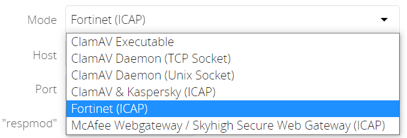
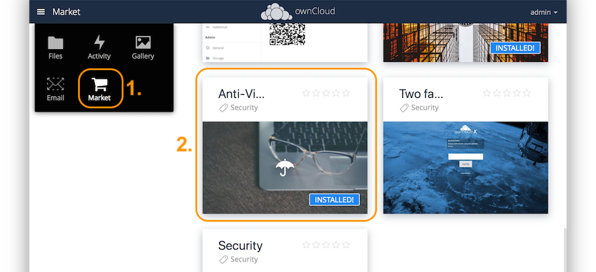
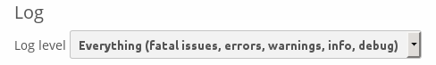
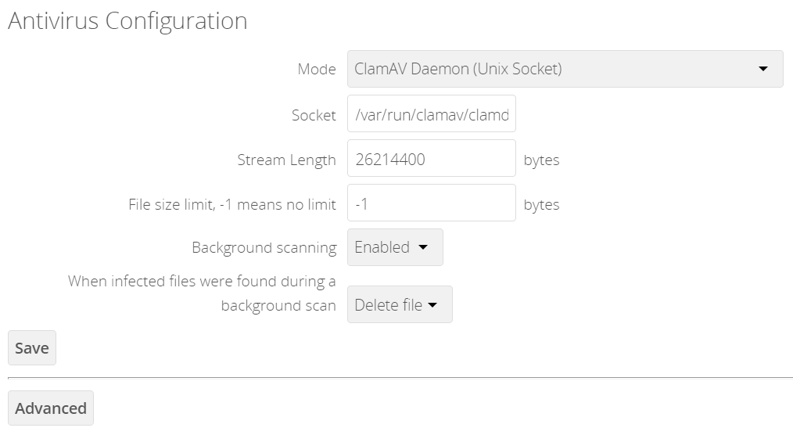
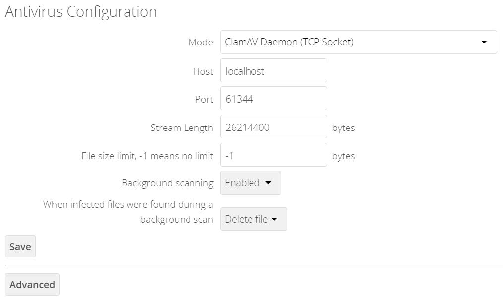
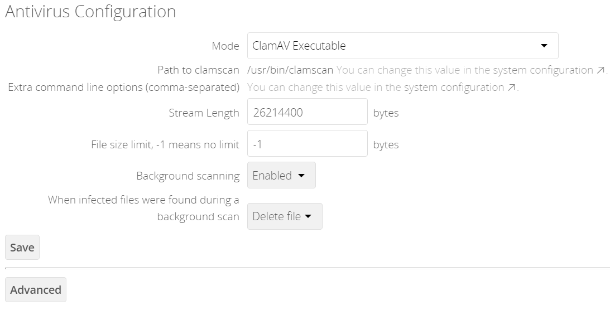
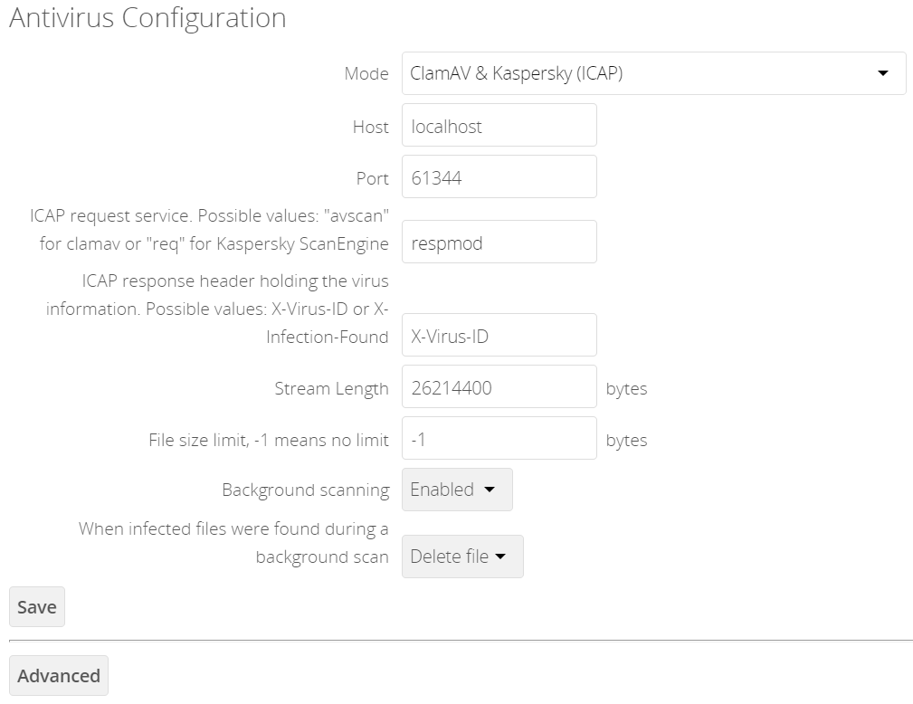
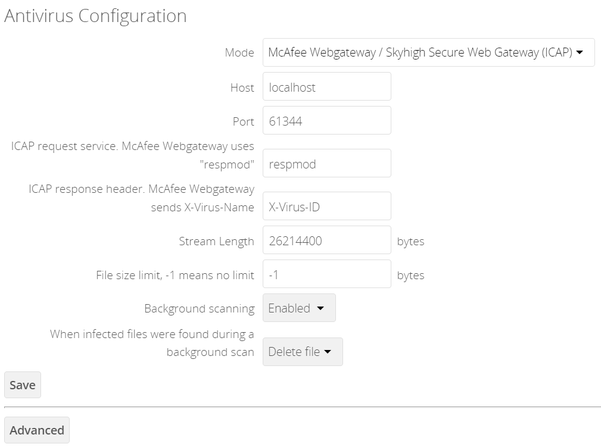
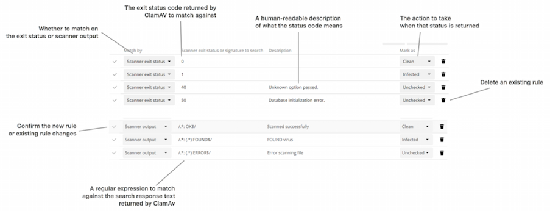

Virus Scanner Support
- Introduction
- General Info
- When Infected Files are Found
- Install the ownCloud Anti-Virus App
- Ways of Configuration
- ClamAV In Native Mode
- ICAP
- Response Rule Configuration (Advanced)
Introduction
When sharing files, security is a key aspect. The ownCloud Anti-Virus extension helps by protecting against malicious software like trojans or viruses.
You can get the Anti-Virus extension from the marketplace.
-
When uploading, files are forwarded from the ownCloud server to a malware scanning engine before they are written to the storage. When a file is recognized as malicious, it can be logged and prevented from being uploaded to the server to ensure that files in ownCloud are free of malware. More sophisticated rules may be specified by the admin in the ownCloud Web interface .
-
When downloading, the files are scanned again to prevent infections to spread, which were not known by the scanner at the time of the upload and therefore missed.
General Info
- Native Mode
-
Out of the box, the ownCloud Anti-Virus extension works with Clam AntiVirus (ClamAV) as the directly supported virus scanner. It detects all forms of malware including trojans, viruses and worms and scans compressed files, executables, image files, PDF, as well as many other file types. The ownCloud Anti-Virus application relies on the underlying ClamAV virus scanning engine, to which the admin points ownCloud when configuring the application. The ClamAV virus definitions need to be kept up to date in order to provide effective protection.
- ICAP
-
Starting with Anti-Virus version 1.0.0, the app also offers an ICAP integration only available with Enterprise installations. Admins can integrate their favorite enterprise-grade antivirus scanners through the open standard Internet Content Adaptation Protocol (ICAP). With this setup, ownCloud can delegate the scanning of uploaded files to another machine, the ICAP server. The ICAP server then checks them and either greenlights them or, if malicious code is found, treats the offending file(s) as specified in the settings and notifies the ownCloud server. ownCloud can then act accordingly and based on the settings made reject the upload. Offloading the anti-virus scans to another dedicated server can greatly improve performance compared to running the ClamAV virus scanner on the same machine as ownCloud.
Starting with Anti-Virus version 1.1.0, additional scanners like the FortiSandbox and McAfee Web Gateway have been added as selectable ICAP scanners.
- Antivirus scanner modes
-
The following image shows the currently supported scanners including how they are connected.

- Common notes
-
A file is parsed and an exit code returned, or an exit code is evaluated if no result is available to determine the response from the scan. In case of an infected file, the appropriate action is always to delete the file. Though the setting can be made, the choice
deleteorlogfor the infected condition only applies to the special case of background scans.The whole file is scanned when it is moved or saved to the final location. Individual chunks are not scanned.
When Infected Files are Found
During an upload these actions are taken:
-
The upload is blocked.
-
The event is logged in the ownCloud server log.
-
The event is reported and/or logged by the client / Web UI.
During a background scan, the app can take one of two actions:
-
Log Only: Log the event.
-
Delete file: Delete the detected file.
Set When infected files were found during a background scan to the value that suits your needs.
Install the ownCloud Anti-Virus App
-
The Anti-Virus app needs to be installed from the ownCloud Market (it’s available in the "Security" category) and then as admin enabled in ownCloud under .

-
To install the app via the occ command, execute:
sudo -u www-data ./occ market:install files_antivirusand enable it with the following occ command:
sudo -u www-data ./occ app:enable files_antivirus
Ways of Configuration
Configure the Anti-Virus App Using GUI
Navigate to , where you’ll find the "Antivirus Configuration" panel to configure the Anti-Virus app via the GUI.
Configure the Anti-Virus App Using occ
All of the configuration settings for the Anti-Virus app are configurable by passing the relevant key and value to the occ config:app:set files_antivirus command. For example:
sudo -u www-data ./occ config:app:set files_antivirus \
av_socket --value="/var/run/clamav/clamd.ctl"To get a current option, run for example:
sudo -u www-data ./occ config:app:get files_antivirus \
av_socket| Setting | Description | Default |
|---|---|---|
|
Extra command-line options (comma-separated) to pass to ClamAV. |
|
|
The host name or IP address of the antivirus server. |
|
|
The action to take when infected files were found during a background scan. |
|
|
The maximum file size limit; |
|
|
The Anti-Virus binary operating mode.
|
|
|
ICAP request service, dependent on the ICAP mode
|
|
|
ICAP response header holding the virus information, dependent on the ICAP mode
|
|
|
The path to the |
|
|
The port number of the antivirus server. |
|
|
Should scans run in the background? |
|
|
The name of ClamAV’s UNIX socket file. |
|
|
The maximum stream length that ClamAV will accept in bytes (*). |
|
(*) … The Stream Length value sets the number of bytes to read in one pass and defaults to 26214400 bytes (twenty-six megabytes). This value should be no larger than the PHP memory_limit settings or physical memory if memory_limit is set to -1 (no limit).
ClamAV In Native Mode
ClamAV Feature List
-
Operates on all major operating systems, including Windows, Linux, and macOS.
-
Detects all forms of malware including Trojan horses, viruses, and worms.
-
Scans compressed files, executables, image files, Flash, PDF, as well as many others.
What’s more, ClamAV’s Freshclam daemon automatically updates its malware signature database at scheduled intervals.
ClamAV Integration Into ownCloud
ownCloud integrates with ClamAV natively in several ways, see Configuration Modes.
|
Scanning Notes for ClamAV
-
Files are checked when they are uploaded or updated and before they are downloaded.
-
ownCloud does not maintain a cache of previously scanned files.
-
If the app is either not configured or is misconfigured, then it rejects file uploads.
-
If ClamAV is unavailable, then the app rejects file uploads.
-
A file size limit applies both to background scans and to file uploads.
-
After installing ClamAV and the related tools, you will have two configuration files:
/etc/freshclam.confand/etc/clamd.d/scan.conf. -
We recommend that you enable verbose logging in both
clamd.confandfreshclam.confinitially, to verify correct operation of both.
Installing ClamAV
Install ClamAV on Ubuntu with the following command:
sudo apt install clamav clamav-daemonThis automatically creates the default configuration files and launches the clamd and freshclam daemons.
Enabling and Running ClamAV
Enable and start the clamd service with following commands.
sudo systemctl daemon-reload
sudo systemctl enable clamav-daemon.service
sudo systemctl start clamav-daemon.serviceWhen successful, an output similar to the following should appear on the terminal:
Synchronizing state of clamav-daemon.service with SysV service script with
/lib/systemd/systemd-sysv-install.
Executing: /lib/systemd/systemd-sysv-install enable clamav-daemonClamAV Virus Database Updates
-
You can manually start the updating process with this command:
sudo freshclamYou should update manually at least once before using ClamAV within ownCloud. The initial update can take several minutes. In case of persisting issues running
freshclam, you can gently end the process with the following command:sudo pkill -15 -x freshclamand retry manually updating again.
-
To automate the update process, run this cron entry for example.
# m h dom mon dow command 47 * * * * /usr/bin/freshclam --quietAvoid any multiples of 10 to better distribute the load on the ClamAV virus pattern servers. This can reduce the load on the servers and therefore update times.
Configuring ClamAV within ownCloud
| If the app is enabled but either not or incorrectly configured, it will strictly reject all uploads for the whole instance! |
ClamAV can be configured in the following two ways:
Change Log Level Temporarily
Once ClamAV is installed, select and, in the "Log" section, temporarily set Log level to "Everything (fatal issues, errors, warnings, info, debug)".

Configuration Modes
ClamAV runs in one of three modes:
|
In both daemon modes, background scans are enabled by default. If you want to disable them, run the command: |
ClamAV Daemon (Unix Socket)
In ClamAV Daemon (Unix Socket) mode, ClamAV runs in the background on the same server as the ownCloud installation, or the socket can be made available via a share mount. When there is no activity, clamd places a minimal load on your system. Consider that high CPU usage can occur when users upload large volumes of files.
You must run freshclam at least once for ClamAV to generate the socket.
|

-
Set Mode to "ClamAV Daemon (Unix Socket)". ownCloud should detect your
clamdsocket and fill in the "Socket" field. This is theLocalSocketoption inclamd.conf.You can run
ss(a utility to investigate sockets) to verify it, as in the example below:sudo ss -a | grep -iq clamav && echo "ClamAV is running"If you don’t have
ssinstalled, you may havenetstatinstalled. If so, you can run the following to check if ClamAV is running:netstat -a | grep -q clam && echo "ClamAV is running" -
When infected files were found during a background scan, you have the choice of either:
-
Logging any alerts without deleting the files
-
Immediately deleting infected files
-
ClamAV Daemon (TCP Socket)
In ClamAV Daemon (TCP Socket) mode, ClamAV can run on a different server. This is a good option to reduce load on the ownCloud servers when high network bandwidth is available and many concurrent uploads happen.

-
Set Mode to "ClamAV Daemon (TCP Socket)".
-
Set Host to the host name or IP address of the remote server running ClamAV, and set Port to the server’s port number.
The port number is the value of TCPSocketin/etc/clamav/clamd.conf.
ClamAV Executable
In ClamAV Executable mode, ClamAV runs on the same server as the ownCloud installation, with the clamscan command running only when a file is uploaded.
clamscan can respond slower and may not always be reliable for on-demand usage; it is better to use one of the daemon modes.
|

The image shows a command line option --allmatch=yes (continue scanning within the file after finding a match) which is not necessary to be set and just used here for demonstration purposes of the field.
Starting with ownCloud Anti-Virus version 1.0.0, the path to clamscan and the command line options are set via a config.php entry and are read-only in the user interface. Refer to the config.php parameters for apps for more details.
|
| If you had configured the path and command line options before via the user interface, the values are being migrated from the database to config.php automatically. Check the settings in config.php for their presence after upgrading. |
-
Set Mode to "ClamAV Executable".
-
Set Path to clamscan to the path of
clamscan, which is the interactive ClamAV scanning command, on your server. To find the exact path, runwhich clamscan
ICAP
ICAP is an open standard supported by many antivirus products. With the release of the Anti-Virus app 1.0.0, other virus scanners beside ClamAV can be used via ICAP if you are running it on an ownCloud Enterprise Edition.
Currently the only tested and supported virus scanners are:
-
ClamAV,
-
Kaspersky ScanEngine,
-
FortiSandbox and
-
McAfee Web Gateway / Skyhigh Secure Web Gateway.
Due to the wide distribution of the ICAP standard, more products can be implemented on request. The use of ICAP requires an enterprise license. The functionality can be tested without a license with a grace period of 24 hours.
Either saving a setting using ICAP via the GUI or using the occ command and set the av_mode to one of the ICAP modes triggers a grace period of 24 hours if you don’t have an Enterprise license but want to test ICAP.
|
Depending on your ICAP server, select one of the following example configurations.
General ICAP Settings Using occ
Common Settings
Use the following occ commands to set configurations based on your environment:
-
Set the IP address of your anti-virus server:
sudo -u www-data ./occ config:app:set files_antivirus \ av_host --value="172.17.0.3" -
Specify the port of the anti-virus server:
sudo -u www-data ./occ config:app:set files_antivirus \ av_port --value="1344" -
Enable background scans:
sudo -u www-data ./occ config:app:set files_antivirus \ av_scan_background --value="true" -
Specify what to do with the offending file:
sudo -u www-data ./occ config:app:set files_antivirus \ av_infected_action --value="delete"Possible values are
deleteandonly_log.Note that this setting is only used when
av_scan_backgroundis set totrue.
Mode Dependent Settings
The following settings are just examples and must be adjusted for the scanner you use. For possible values see Configure the Anti-Virus App Using occ
-
Set the ICAP mode:
sudo -u www-data ./occ config:app:set files_antivirus \ av_mode --value="icap" -
Set the request service:
sudo -u www-data ./occ config:app:set files_antivirus \ av_request_service --value="avscan" -
Set the response header:
sudo -u www-data ./occ config:app:set files_antivirus \ av_response_header --value="X-Infection-Found"
ClamAV & Kaspersky (ICAP)
If you decide to use ClamAV, you must first install and configure c-icap on sourceforge. With regard to selecting ClamAV in their configuration, see the section: ModulesConfiguration.
-
Install ClamAV based on the instructions at the beginning of this document and
c-icapas referenced above. -
Select ClamAV & Kaspersky (ICAP) from the drop-down menu in the Anti-Virus app:

| The older versions of Kaspersky’s KAV did not send back the virus/infection name in an ICAP header. Starting with KAV v2.0.0, the header to transport the virus can be configured. Default: No header is sent. For more configuration details see Using Kaspersky Scan Engine in ICAP mode. |
McAfee Web Gateway / Skyhigh Secure Web Gateway (ICAP)
Follow the procedure below to configure ownCloud for the McAfee Web Gateway 10.x and higher in ICAP Mode.
-
Install McAfee Web Gateway based on their instructions.
-
Select McAfee Web Gateway / Skyhigh Secure Web Gateway (ICAP) from the drop-down menu in the Anti-Virus app.

| McAfee provides demo versions with limited runtime for evaluation purposes. Have a look at the McAfee Web page for the Web Gateway. |
Fortinet (ICAP)
-
Install FortiSandbox based on their instructions.
-
Select Fortinet from the drop-down menu in the Anti-Virus app.
| Fortinet provides some demo versions of the FortiSandbox. Have a look at their product page for more information. |
Response Rule Configuration (Advanced)
| Do not change the rules hidden under Advanced unless you know exactly what you’re doing. The defaults should work best. If you have special requirements, contact us at consulting@owncloud.com. |
ownCloud provides the ability to customize how it reacts to the response given by an antivirus scan. To do so, under click Advanced, which you can see in the screenshot below, you can view and change the existing rules. You can also add new ones.

Rules can match on either an exit status (e.g., 0, 1, or 40) or a pattern in the string returned from ClamAV (e.g., /.*: (.\*) FOUND$/).
Here are some points to bear in mind about rules:
-
Scanner exit status rules are used to handle errors when ClamAV is run in CLI mode, while
-
Scanner output rules are used in daemon/socket mode.
-
Daemon output is parsed by regexp.
-
In case there are no matching rules, the status is:
Unknown, and a warning will be logged.
Default Rule Set
| Exit Status or Signature | Description | Marks File As |
|---|---|---|
0 |
Clean |
|
1 |
Infected |
|
40 |
Unknown option passed |
Unchecked |
50 |
Database initialization error |
Unchecked |
52 |
Not supported file type |
Unchecked |
53 |
Can’t open directory |
Unchecked |
54 |
Can’t open file |
Unchecked |
55 |
Error reading file |
Unchecked |
56 |
Can’t stat input file |
Unchecked |
57 |
Can’t get absolute path name of current working directory |
Unchecked |
58 |
I/O error |
Unchecked |
62 |
Can’t initialize logger |
Unchecked |
63 |
Can’t create temporary files/directories |
Unchecked |
64 |
Can’t write to temporary directory |
Unchecked |
70 |
Can’t allocate memory (calloc) |
Unchecked |
71 |
Can’t allocate memory (malloc) |
Unchecked |
/.*: OK$/ |
Clean |
|
/.*: (.*) FOUND$/ |
Infected |
|
/.*: (.*) ERROR$/ |
Unchecked |
The rules are always checked in the following order:
-
Infected
-
Error
-
Clean
In case there are no matching rules, the status would be Unknown and a warning would be logged.
Update an Existing Rule
-
You can change the rules to either match an exit status or the scanner’s output.
-
To match on an exit status, change the
-
Match by dropdown list to Scanner exit status and
-
in the "Scanner exit status or signature to search" field, add the status code to match on.
-
-
To match on the scanner’s output, change the
-
Match by dropdown list to Scanner output and
-
in the Scanner exit status or signature to search field, add the regular expression to match against the scanner’s output.
-
-
-
Then, while not mandatory, add a description of what the status or scan output means. After that, set what ownCloud should do when the exit status or regular expression you set matches the value returned by ClamAV. To do so, change the value of the dropdown in the Mark as column.
The dropdown supports the following three options: Option Description Clean
The file is clean and contains no viruses
Infected
The file contains a virus
Unchecked
No action should be taken
With all these changes made, click the [✓] on the left-hand side of the Match by column, to confirm the change to the rule.
Add A New Rule
To add a new rule, click the button marked Add a rule at the bottom left of the rules table. Then follow the process outlined in Update An Existing Rule.